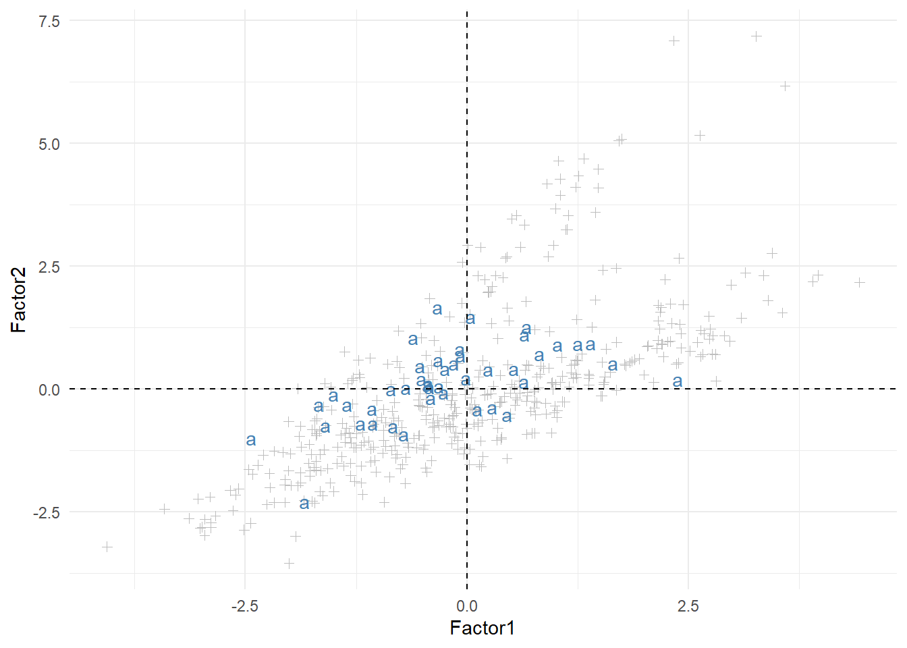
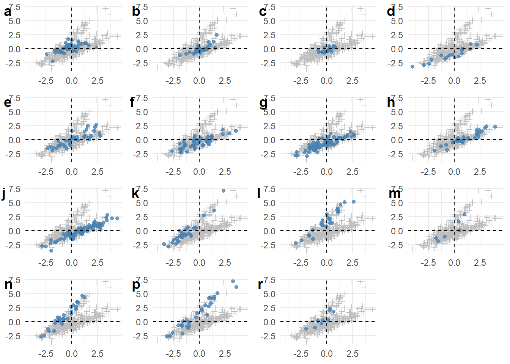
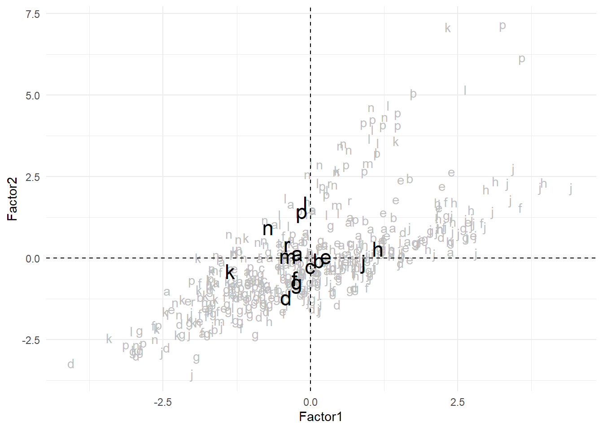

| Section | Component | Register | Files | Tokens |
|---|---|---|---|---|
| Informative | a | Press-reportage | 44 | 100 554 |
| b | Press-editorial | 27 | 61 604 | |
| c | Press-reviews | 17 | 40 704 | |
| d | Religion | 17 | 39 399 | |
| e | Skills & hobbies | 36 | 82 345 | |
| f | Popular Lore | 48 | 110 299 | |
| g | Belles Lettres, Biography, Memoirs, etc. | 75 | 173 096 | |
| h | Miscellaneous | 30 | 70 117 | |
| j | Learned | 80 | 181 888 | |
| Imaginative | k | General Fiction | 29 | 68 488 |
| l | Mystery and Detective Fiction | 24 | 57 169 | |
| m | Science Fiction | 6 | 14 470 | |
| n | Adventure and Western Fiction | 29 | 69 342 | |
| p | Romance and Love Stories | 29 | 70 022 | |
| r | Humor | 9 | 21 695 |
Simple register analysis (multidimensional analysis) of brown TEI
Based on Dirk Speelman’s course material
This document shows how to perform a simple register analysis with Factor Analysis on the Brown corpus. For that purpose we will use the TEI-compliant XML version of the corpus, which will allow us to extract a bit more information from the corpus than other formats. Section 3 will show what the XML file looks like and how we can read and parse it with xml2 and mclm. Section 4 will build on that knowledge to compute a number of frequencies as variables for the Factor Analysis. As we do so, we will illustrate how to take advantage of the possibility of having any type of data in a tibble column. Finally Section 5 will show the Factor Analysis itself with factanal() and illustrate some plotting options.
1 Introduction
In this study we will use the 500 files of the Brown corpus in XML format. We will compute the frequencies of different linguistic features as described in Section 1.1 and use Factor Analysis to extract theoretically relevant underlying dimensions. We will then try to describe different components of the Brown corpus (Table 1) in terms of these dimensions.
1.1 Features of interest
For this simple analysis we will annotate 13 numerical variables, which is quite modest compared to Biber (1988):
| Name | Value |
|---|---|
ttr |
Type token ratio (number of types divided by number of tokens)1 |
word_len |
Average word length, in characters |
p_mw |
Proportion of combined tags; typically clitics as in she’s |
p_c |
Proportion of punctuation characters |
p_ppss |
Proportion of personal pronouns nominative, besides third person singular |
p_noun |
Proportion of nouns |
p_bigr |
Number of unique word bigrams, relative to document size |
p_nomin |
Proportion of nominalisations (nouns ending in -tion, -ment, -ness, or -ity) |
p_pobi |
Number of unique pos tag bigrams, relative to document size |
p_adj |
Proportion of adjectives |
p_neg |
Number of negations, relative to document size |
p_adv |
Proportion of adverbs |
p_qual |
Number of qualifiers, relative to document size |
The idea is that these variables are relatively straightforward to annotate — with some programming, they can be easily extracted automatically. The theoretically relevant dimensions, instead, are much harder to operationalize: Factor Analysis is meant to extract these dimensions from the operationalizable linguistic features.
2 Setup
The first step is to load the libraries: we will use tidyverse, mclm, here and, for some XML processing, xml2.
The directory with the corpus, for the purposes of this document, is defined below. If you follow along, make sure to set corpus_directory to the path to wherever your copy of the corpus is stored.
corpus_directory <- here::here("studies", "_corpora", "brown_tei")The corpus directory contains some documentation files other than the corpus files themselves, so we need to filter them out when creating our fnames object. After visual inspection of the contents of the folder we can set up a regular expression that matches the names of the files we want: we will request for files ending in the following sequence: slash, one lowercase letter, two digits, “.xml”.
tei_fnames <- get_fnames(corpus_directory) %>%
keep_re(r"--[(?xi) / [a-z] \d\d [.]xml $ ]--")
print(tei_fnames, n = 6, hide_path = corpus_directory)Filename collection of length 500
filename
--------
1 a01.xml
2 a02.xml
3 a03.xml
4 a04.xml
5 a05.xml
6 a06.xml
...3 Read from XML
The first 12 lines of the first file in tei_fnames look like this:
<TEI xmlns="http://www.tei-c.org/ns/
1.0"><teiHeader><fileDesc><titleStmt><title>Sample A01 from The Atlanta
Constitution</title><title type="sub"> November 4, 1961, p.1 "Atlanta
Primary ..."
"Hartsfield Files"
August 17, 1961, "Urged strongly ..."
"Sam Caldwell Joins"
March 6,1961, p.1 "Legislators Are Moving" by Reg Murphy
"Legislator to fight" by Richard Ashworth
"House Due Bid..."
p.18 "Harry Miller Wins..."
</title></titleStmt><editionStmt><edition>A part of the XML version of the Brown
Corpus</edition></editionStmt><extent>1,988 words 431 (21.7%) quotes 2 symbols</
extent><publicationStmt><idno>A01</idno><availability><p>Used by permission
of The Atlanta ConstitutionState News Service (H), and Reg Murphy (E).</p></
availability></publicationStmt><sourceDesc><bibl> The Atlanta Constitution</
bibl></sourceDesc></fileDesc><encodingDesc><p>Arbitrary Hyphen: multi-million
[0520]</p></encodingDesc><revisionDesc><change when="2008-04-27">Header auto-
generated for TEI version</change></revisionDesc></teiHeader>
<text xml:id="A01" decls="A">
<body><p><s n="1"><w type="AT">The</w> <w type="NP" subtype="TL">Fulton</w>
<w type="NN" subtype="TL">County</w> <w type="JJ" subtype="TL">Grand</w> <w
type="NN" subtype="TL">Jury</w> <w type="VBD">said</w> <w type="NR">Friday</
w> <w type="AT">an</w> <w type="NN">investigation</w> <w type="IN">of</w>
<w type="NPg">Atlanta's</w> <w type="JJ">recent</w> <w type="NN">primary</
w> <w type="NN">election</w> <w type="VBD">produced</w> <c type="pct">``</
c> <w type="AT">no</w> <w type="NN">evidence</w> <c type="pct">''</c> <w
type="CS">that</w> <w type="DTI">any</w> <w type="NNS">irregularities</w> <w
type="VBD">took</w> <w type="NN">place</w> <c type="pct">.</c> </s>
</p>
An XML file has a hierarchical structure, with elements indicated by tags and sometime containing other elements. For example, we could have a paragraph, starting with the <p> tag and ending with the following </p>, which can contain a series of sentences preceded by <s> and ending in </s>, and each can contain a series of words, preceded by <w> tags, each ending in the following </w> tag.2 The opening tag can also contain attribute-value pairs, e.g. <w type="IN">of</w> corresponds to a word (indicated by the w tag) with content “of” and an attribute “type” with value “IN” —in this case, the attribute points to the part of speech. Some words also have a “subtype” attribute: <w type="NP" subtype="TL">Fulton</w> in this corpus is equivalent to “fulton/np-tl” in the other version of the Brown corpus.
The first tag in these files is <TEI> with an “xmlns” attribute, whose value is an URL. This URL points to the “namespace”, the standards to which the annotation applies, which indicate what each type of tag means.
Because the file is hierarchical, we can read it with special parsers that interpret the hierarchical structure. Concretely, we will use xml2::read_xml(), which returns an object of class xml_document.
tei1 <- read_xml(tei_fnames[[1]])
tei1{xml_document}
<TEI xmlns="http://www.tei-c.org/ns/1.0">
[1] <teiHeader>\n <fileDesc>\n <titleStmt>\n <title>Sample A01 from ...
[2] <text xml:id="A01" decls="A">\n <body>\n <p>\n <s n="1">\n ...We could extract the first sentence of the corpus with xml_find_first(), providing the XPath expression “//d1:s”, i.e. an s element from namespace d1. In xml2, the first namespace in a file is called d1, as you can see with xml_ns().
xml_ns(tei1)d1 <-> http://www.tei-c.org/ns/1.0first_sentence <- xml_find_first(tei1, "//d1:s")
print(first_sentence, max_n = 10){xml_node}
<s n="1">
[1] <w type="AT">The</w>
[2] <w type="NP" subtype="TL">Fulton</w>
[3] <w type="NN" subtype="TL">County</w>
[4] <w type="JJ" subtype="TL">Grand</w>
[5] <w type="NN" subtype="TL">Jury</w>
[6] <w type="VBD">said</w>
[7] <w type="NR">Friday</w>
[8] <w type="AT">an</w>
[9] <w type="NN">investigation</w>
[10] <w type="IN">of</w>
...The output is an xml_nodeset object, which contains xml_node objects; xml_children() can then retrieve the elements inside it. Further, xml_text() retrieves the contents of the tags as text and xml_attr(), the values of specific attributes. The output of these functions are simple character vectors.
sentence_contents <- xml_children(first_sentence)
print(sentence_contents, max_n = 10){xml_nodeset (25)}
[1] <w type="AT">The</w>
[2] <w type="NP" subtype="TL">Fulton</w>
[3] <w type="NN" subtype="TL">County</w>
[4] <w type="JJ" subtype="TL">Grand</w>
[5] <w type="NN" subtype="TL">Jury</w>
[6] <w type="VBD">said</w>
[7] <w type="NR">Friday</w>
[8] <w type="AT">an</w>
[9] <w type="NN">investigation</w>
[10] <w type="IN">of</w>
...xml_text(sentence_contents) [1] "The" "Fulton" "County" "Grand"
[5] "Jury" "said" "Friday" "an"
[9] "investigation" "of" "Atlanta's" "recent"
[13] "primary" "election" "produced" "``"
[17] "no" "evidence" "''" "that"
[21] "any" "irregularities" "took" "place"
[25] "." xml_attr(sentence_contents, "type") [1] "AT" "NP" "NN" "JJ" "NN" "VBD" "NR" "AT" "NN" "IN" "NPg" "JJ"
[13] "NN" "NN" "VBD" "pct" "AT" "NN" "pct" "CS" "DTI" "NNS" "VBD" "NN"
[25] "pct"With this knowledge, we can now read the files in the corpus and obtain the information we need for our Factor Analsyis. We will collect different kinds of tokens with mclm::find_xpath(), process them with xml2 functions, count frequencies and generate a matrix.
4 Annotate the dataset
In this section we will go step by step through the automatic annotation procedure and thus illustrate how to use tibbles and purrr functions for this purpose. If you want to see the final code directly, you may skip to Section 4.10.
tibbles and purrr
There are other ways of achieving the same result next to what we will do in this section, i.e. by opening one file at a time, processing it and storing the output, either with a map()-like function or a for loop. However, in this case we will work with a tibble to show how the columns can have different kinds of data and how to work with such a format. In particular, we will work with purrr::map() and a few variations — these functions take a list or vector and a function3 as input, run the same function on each element of the list, and return the result as either a list or a vector. map() always returns a list; map_dbl() returns a numerical vector, map_chr() returns a character vector, etc. This is useful both when trying to apply the same function to all elements of a list or when you want to apply a function to all elements of a vector but the function is not vectorized (it cannot take vectors with length larger than 1).
As a first step to generating our frequencies, we will create a tibble based on the filenames. Each piece of information we will retrieve, whatever its type, will be stored in its own column.
d <- as_tibble(tei_fnames)4.1 Read from XML
First, we will read the files by applying read_xml() to each element of the filename column in d via map(). This results in a column that is a list of xml_document objects. d$xml[[1]] is the same as read_xml(d$filename[[1]]).
Example
map(some_list, tolower) returns a list in which the first element is tolower(some_list[[1]]), the second is tolower(some_list[[2]]), etc.
d <- d %>% mutate(xml = map(filename, read_xml))
d %>% mutate(filename = short_names(filename)) # just hiding the path when printing# A tibble: 500 × 2
filename xml
<fnames> <list>
1 a01 <xml_dcmn>
2 a02 <xml_dcmn>
3 a03 <xml_dcmn>
4 a04 <xml_dcmn>
5 a05 <xml_dcmn>
6 a06 <xml_dcmn>
7 a07 <xml_dcmn>
8 a08 <xml_dcmn>
9 a09 <xml_dcmn>
10 a10 <xml_dcmn>
# … with 490 more rowsd$xml[[1]]{xml_document}
<TEI xmlns="http://www.tei-c.org/ns/1.0">
[1] <teiHeader>\n <fileDesc>\n <titleStmt>\n <title>Sample A01 from ...
[2] <text xml:id="A01" decls="A">\n <body>\n <p>\n <s n="1">\n ...
4.3 Retrieve text with xml_text()
With the new columns we can create tokens objects by retrieving the contents of the tags (for word form tokens) or the POS-tags. The columns all_tokens and words are created by applying a chain of functions to the elements of the token_tags and word_tags columns: xml_text() to obtain the content, tolower() to turn it to lower case, cleanup_spaces() to remove any spaces that might be accidentally included in the token, and as_tokens() to turn the resulting character vector into a tokens object. Therefore, the columns all_tokens and words will be lists of tokens objects. Below is an example of the chain of functions as applied to the first element of d$token_tags.
[1] "The" "Fulton" "County" "Grand" "Jury" "said" [1] "the" "fulton" "county" "grand" "jury" "said" [1] "the" "fulton" "county" "grand" "jury" "said" Token sequence of length 2242
idx token
--- -------------
1 the
2 fulton
3 county
4 grand
5 jury
6 said
7 friday
8 an
9 investigation
10 of
...d <- d %>%
select(-xml, -ns) %>%
mutate(
all_tokens = map(token_tags, ~ xml_text(.x) %>% tolower() %>% cleanup_spaces() %>% as_tokens()),
words = map(word_tags, ~ xml_text(.x) %>% tolower() %>% cleanup_spaces() %>% as_tokens())
)
d# A tibble: 500 × 6
token_tags word_tags mw_tags punctuation_tags all_tokens words
<list> <list> <list> <list> <list> <list>
1 <xml_ndst> <xml_ndst> <xml_ndst> <xml_ndst> <tokens [2,242]> <tokens>
2 <xml_ndst> <xml_ndst> <xml_ndst> <xml_ndst> <tokens [2,277]> <tokens>
3 <xml_ndst> <xml_ndst> <xml_ndst> <xml_ndst> <tokens [2,275]> <tokens>
4 <xml_ndst> <xml_ndst> <xml_ndst> <xml_ndst> <tokens [2,216]> <tokens>
5 <xml_ndst> <xml_ndst> <xml_ndst> <xml_ndst> <tokens [2,244]> <tokens>
6 <xml_ndst> <xml_ndst> <xml_ndst> <xml_ndst> <tokens [2,263]> <tokens>
7 <xml_ndst> <xml_ndst> <xml_ndst> <xml_ndst> <tokens [2,270]> <tokens>
8 <xml_ndst> <xml_ndst> <xml_ndst> <xml_ndst> <tokens [2,187]> <tokens>
9 <xml_ndst> <xml_ndst> <xml_ndst> <xml_ndst> <tokens [2,234]> <tokens>
10 <xml_ndst> <xml_ndst> <xml_ndst> <xml_ndst> <tokens [2,282]> <tokens>
# … with 490 more rowsNow that we have extracted the terms that we are interested in, we don’t really need the xml and ns columns anymore,
The lists below don’t look very different because there are no punctuation marks in the first 10 tokens.
Token sequence of length 2242
idx token
--- -------------
1 the
2 fulton
3 county
4 grand
5 jury
6 said
7 friday
8 an
9 investigation
10 of
...Token sequence of length 1985
idx token
--- -------------
1 the
2 fulton
3 county
4 grand
5 jury
6 said
7 friday
8 an
9 investigation
10 of
...4.5 Build bigrams
The following step, before we can compute the frequencies we want, is to obtain bigrams. To each element x of all_tokens (for word form bigrams) and pos_codes (for POS-tags bigrams) we will implement the following code: paste(x, c(x[-1], "EOF"), sep = "|"). As shown below, x[-1] returns the vector x minus its first element, c(x[-1], "EOF") appends “EOF” (which stands for End Of File) to the vector, and paste() glues both vectors. paste() is a vectorized function, so it will automatically “paste” the first element of the first vector with the first element of the second vector, the second element of each vector, the third element of each vector, etc. The sep argument lets us decide what character will be used when joining those elements.4
x <- head(letters, 10)
x [1] "a" "b" "c" "d" "e" "f" "g" "h" "i" "j"x[-1][1] "b" "c" "d" "e" "f" "g" "h" "i" "j"c(x[-1], "EOF") [1] "b" "c" "d" "e" "f" "g" "h" "i" "j" "EOF" [1] "a b" "b c" "c d" "d e" "e f" "f g" "g h" "h i" "i j"
[10] "j EOF" [1] "a|b" "b|c" "c|d" "d|e" "e|f" "f|g" "g|h" "h|i" "i|j"
[10] "j|EOF"Token sequence of length 10
idx token
--- -----
1 a|b
2 b|c
3 c|d
4 d|e
5 e|f
6 f|g
7 g|h
8 h|i
9 i|j
10 j|EOFThe result of this code is a vector of bigrams, i.e. each element corresponds to one element of x along with its following element.
d <- d %>%
select(-token_tags, -word_tags) %>%
mutate(
bigrams = map(all_tokens, ~ paste(.x, c(.x[-1], "EOF"), sep = "|") %>% as_tokens()),
pos_bigrams = map(pos_codes, ~ paste(.x, c(.x[-1], "EOF"), sep = "|") %>% as_tokens())
)
d# A tibble: 500 × 7
mw_tags punctuation_tags all_tokens words pos_codes bigrams pos_bigr…¹
<list> <list> <list> <list> <list> <list> <list>
1 <xml_ndst> <xml_ndst> <tokens> <tokens> <tokens> <tokens> <tokens>
2 <xml_ndst> <xml_ndst> <tokens> <tokens> <tokens> <tokens> <tokens>
3 <xml_ndst> <xml_ndst> <tokens> <tokens> <tokens> <tokens> <tokens>
4 <xml_ndst> <xml_ndst> <tokens> <tokens> <tokens> <tokens> <tokens>
5 <xml_ndst> <xml_ndst> <tokens> <tokens> <tokens> <tokens> <tokens>
6 <xml_ndst> <xml_ndst> <tokens> <tokens> <tokens> <tokens> <tokens>
7 <xml_ndst> <xml_ndst> <tokens> <tokens> <tokens> <tokens> <tokens>
8 <xml_ndst> <xml_ndst> <tokens> <tokens> <tokens> <tokens> <tokens>
9 <xml_ndst> <xml_ndst> <tokens> <tokens> <tokens> <tokens> <tokens>
10 <xml_ndst> <xml_ndst> <tokens> <tokens> <tokens> <tokens> <tokens>
# … with 490 more rows, and abbreviated variable name ¹pos_bigramsAt this point we don’t need token_tags or word_tags anymore either.
Below we see the first token and POS-tag bigrams found in the first file of the corpus.
Token sequence of length 2242
idx token
--- ----------------
1 the|fulton
2 fulton|county
3 county|grand
4 grand|jury
5 jury|said
6 said|friday
7 friday|an
8 an|investigation
9 investigation|of
10 of|atlanta's
...Token sequence of length 2242
idx token
--- ------
1 AT|NP
2 NP|NN
3 NN|JJ
4 JJ|NN
5 NN|VBD
6 VBD|NR
7 NR|AT
8 AT|NN
9 NN|IN
10 IN|NPg
...
4.6 Get counts with n_tokens()
Now we have everything we need to compute the frequencies we were interested in. The new columns won’t be lists anymore but simple numeric vectors, so we will use map_dbl() instead of map(). This function can be used when the output of the function applied to each element is a single number. For example, n_tokens() returns the number of tokens in a tokens, types or freqlist object, so applying it to each element of the all_tokens column, which is a list of tokens objects, will return a series of numbers.
Lists and vectors
In contrast to map(), map_dbl() returns a numeric vector rather than a list of numbers, which is a different kind of object in R. For example, if we have a vector c(1, 2, 3), we can divide each element of it by the same number with a vectorized function such as /.
However, if it is a list, that won’t work; we would need a function such as map().
a_list <- list(1, 2, 3)
a_list[[1]]
[1] 1
[[2]]
[1] 2
[[3]]
[1] 3a_list/2Error in a_list/2: non-numeric argument to binary operatorOnce we have the n_tok column, we can create other numeric columns with map_dbl(), applying different functions that compute quantities, and then divide them by the contents of n_tok to obtain proportions. The number of types can be obtained by calling n_types() on the elements of the all_tokens, bigrams and pos_bigrams columns; the number of mw and c tags can be obtained by applying length to the elements of the mw_tags and punctuation_tags columns. For mw elements, which are very infrequent, we will multiply the resulting proportion by 10 000. The mean word length can be be obtained by applying sum(nchar(x))/n_tokens(x) to each element of the words columns: we count the number of characters of each element, sum them and then divide them by the number of elements.
d <- d %>%
mutate(
n_tok = map_dbl(all_tokens, n_tokens),
ttr = map_dbl(all_tokens, n_types)/n_tok,
p_bigr = map_dbl(bigrams, n_types) / n_tok,
p_pobi = map_dbl(pos_bigrams, n_types) / n_tok,
p_mw = map_dbl(mw_tags, length) / n_tok * 10000,
p_c = map_dbl(punctuation_tags, length) / n_tok,
word_len = map_dbl(words, ~ sum(nchar(.x))/n_tokens(.x))
)
d %>% select(all_tokens, n_tok, ttr, starts_with("p_"), word_len)# A tibble: 500 × 8
all_tokens n_tok ttr p_bigr p_pobi p_mw p_c word_len
<list> <dbl> <dbl> <dbl> <dbl> <dbl> <dbl> <dbl>
1 <tokens [2,242]> 2242 0.357 0.824 0.207 13.4 0.113 4.99
2 <tokens [2,277]> 2277 0.381 0.836 0.185 17.6 0.118 4.95
3 <tokens [2,275]> 2275 0.340 0.808 0.187 17.6 0.110 4.88
4 <tokens [2,216]> 2216 0.383 0.840 0.226 4.51 0.0884 5.19
5 <tokens [2,244]> 2244 0.320 0.765 0.206 0 0.0936 4.77
6 <tokens [2,263]> 2263 0.350 0.813 0.202 53.0 0.114 4.89
7 <tokens [2,270]> 2270 0.370 0.828 0.202 17.6 0.105 5.13
8 <tokens [2,187]> 2187 0.356 0.810 0.212 4.57 0.0841 4.91
9 <tokens [2,234]> 2234 0.379 0.823 0.179 17.9 0.0971 4.94
10 <tokens [2,282]> 2282 0.368 0.832 0.216 4.38 0.120 4.82
# … with 490 more rowsAs the output above shows, the new columns are numeric vectors rather than lists.
4.7 Filter tokens with re()
Finally, we want to obtain the number of nominalizations and of different grammatical categories. We can obtain the nominalizations by extracting the word forms in the all_tokens column with a regular expression:
Token sequence of length 80
idx token
--- --------------
1 investigation
2 election
3 election
4 election
5 election
6 registration
7 election
8 administration
9 department
10 implementation
...[1] 80[1] 0.036[1] 357The code below applies such workflow to the all_tokens column, obtaining the proportion of tokens that are nominalizations in each of the files, and similar instructions to pos_codes, extracting the proportion of tokens that are nouns in each file.
d <- d %>%
mutate(
p_nomin = map_dbl(all_tokens, ~n_tokens(.x[re("..+(tion|ment|ness|ity)$")])) / n_tok * 10000,
p_noun = map_dbl(pos_codes, ~ n_tokens(.x[re("NN")])) / n_tok
)
d %>% select(all_tokens, pos_codes, p_nomin, p_noun)# A tibble: 500 × 4
all_tokens pos_codes p_nomin p_noun
<list> <list> <dbl> <dbl>
1 <tokens [2,242]> <tokens [2,242]> 357. 0.244
2 <tokens [2,277]> <tokens [2,277]> 211. 0.250
3 <tokens [2,275]> <tokens [2,275]> 224. 0.256
4 <tokens [2,216]> <tokens [2,216]> 370. 0.225
5 <tokens [2,244]> <tokens [2,244]> 241. 0.223
6 <tokens [2,263]> <tokens [2,263]> 305. 0.226
7 <tokens [2,270]> <tokens [2,270]> 304. 0.224
8 <tokens [2,187]> <tokens [2,187]> 251. 0.220
9 <tokens [2,234]> <tokens [2,234]> 255. 0.269
10 <tokens [2,282]> <tokens [2,282]> 153. 0.208
# … with 490 more rows
4.8 Build many columns at once and unnest()
For the other POS-tags, we can do the same we did for the nouns. In the case of personal pronouns (“PPSS”), adjectives (“JJ”), negations (“*“), adverbs (”RB”) and past tenses (“QL”), which are very infrequent, we’ll multiply the proportions by 10 000. Therefore, given a tokens object with POS-tags pos and a number of tokens nt, for each of these regular expressions regex we will run the exact same code: n_tokens(pos[re(regex)])/n_tok * 10000. In order to avoid redundancy, we can do this for each POS-tag with map_dbl().
pos <- d$pos_codes[[1]]
nt <- d$n_tok[[1]]
pos_mapping <- c(p_ppss = "PPSS", p_adj = "JJ",
p_neg = "[*]", p_adv = "RB", p_qual = "QL")
map_dbl(pos_mapping, ~n_tokens(pos[re(.x)])/nt * 10000)p_ppss p_adj p_neg p_adv p_qual
36 464 13 205 27 map_dbl(pos_mapping, ~n_tokens(pos[re(.x)])/nt * 10000) %>% as_tibble_row()# A tibble: 1 × 5
p_ppss p_adj p_neg p_adv p_qual
<dbl> <dbl> <dbl> <dbl> <dbl>
1 35.7 464. 13.4 205. 26.8If we wrap this map_dbl() call inside a function pos_proportions(), we can easily apply ti to any pos and nt values.
pos_proportions <- function(pos, nt) {
pos_mapping <- c(p_ppss = "PPSS", p_adj = "JJ", p_neg = "[*]",
p_adv = "RB", p_qual = "QL")
map_dbl(pos_mapping, ~n_tokens(pos[re(.x)])/nt * 10000) %>%
as_tibble_row()
}
pos_proportions(pos, nt)# A tibble: 1 × 5
p_ppss p_adj p_neg p_adv p_qual
<dbl> <dbl> <dbl> <dbl> <dbl>
1 35.7 464. 13.4 205. 26.8We can then apply our custom function pos_proportions to each element pair made from an item of pos_codes and one of n_tok using map2(), which will create a column of tibbles. Afterwards, unnest() turns the columns of those mini tibbles into columns of our dataframe.
d <- d %>% mutate(pos_prop = map2(pos_codes, n_tok, pos_proportions))
d %>% select(pos_codes, n_tok, pos_prop)# A tibble: 500 × 3
pos_codes n_tok pos_prop
<list> <dbl> <list>
1 <tokens [2,242]> 2242 <tibble [1 × 5]>
2 <tokens [2,277]> 2277 <tibble [1 × 5]>
3 <tokens [2,275]> 2275 <tibble [1 × 5]>
4 <tokens [2,216]> 2216 <tibble [1 × 5]>
5 <tokens [2,244]> 2244 <tibble [1 × 5]>
6 <tokens [2,263]> 2263 <tibble [1 × 5]>
7 <tokens [2,270]> 2270 <tibble [1 × 5]>
8 <tokens [2,187]> 2187 <tibble [1 × 5]>
9 <tokens [2,234]> 2234 <tibble [1 × 5]>
10 <tokens [2,282]> 2282 <tibble [1 × 5]>
# … with 490 more rows# A tibble: 500 × 7
pos_codes n_tok p_ppss p_adj p_neg p_adv p_qual
<list> <dbl> <dbl> <dbl> <dbl> <dbl> <dbl>
1 <tokens [2,242]> 2242 35.7 464. 13.4 205. 26.8
2 <tokens [2,277]> 2277 39.5 457. 8.78 193. 13.2
3 <tokens [2,275]> 2275 30.8 541. 13.2 163. 39.6
4 <tokens [2,216]> 2216 18.1 731. 4.51 311. 99.3
5 <tokens [2,244]> 2244 62.4 584. 0 196. 26.7
6 <tokens [2,263]> 2263 128. 535. 8.84 163. 13.3
7 <tokens [2,270]> 2270 48.5 604. 8.81 163. 26.4
8 <tokens [2,187]> 2187 45.7 590. 4.57 306. 77.7
9 <tokens [2,234]> 2234 44.8 389. 8.95 179. 22.4
10 <tokens [2,282]> 2282 101. 482. 4.38 184. 48.2
# … with 490 more rows4.9 Obtain matrix
The last we have to do is select the columns we are actually interested in, turning our output into a matrix and setting the rownames with the short version of our filenames.
d <- d %>% select(ttr, word_len, starts_with("p_"))
colnames(d) [1] "ttr" "word_len" "p_bigr" "p_pobi" "p_mw" "p_c"
[7] "p_nomin" "p_noun" "p_ppss" "p_adj" "p_neg" "p_adv"
[13] "p_qual" d_mat <- as.matrix(d)
rownames(d_mat) <- short_names(tei_fnames)
d_mat[1:10,] ttr word_len p_bigr p_pobi p_mw p_c p_nomin p_noun p_ppss p_adj p_neg
a01 0.36 5.0 0.82 0.21 13.4 0.113 357 0.24 36 464 13.4
a02 0.38 4.9 0.84 0.19 17.6 0.118 211 0.25 40 457 8.8
a03 0.34 4.9 0.81 0.19 17.6 0.110 224 0.26 31 541 13.2
a04 0.38 5.2 0.84 0.23 4.5 0.088 370 0.22 18 731 4.5
a05 0.32 4.8 0.77 0.21 0.0 0.094 241 0.22 62 584 0.0
a06 0.35 4.9 0.81 0.20 53.0 0.114 305 0.23 128 535 8.8
a07 0.37 5.1 0.83 0.20 17.6 0.105 304 0.22 48 604 8.8
a08 0.36 4.9 0.81 0.21 4.6 0.084 251 0.22 46 590 4.6
a09 0.38 4.9 0.82 0.18 17.9 0.097 255 0.27 45 389 9.0
a10 0.37 4.8 0.83 0.22 4.4 0.120 153 0.21 101 482 4.4
p_adv p_qual
a01 205 27
a02 193 13
a03 163 40
a04 311 99
a05 196 27
a06 163 13
a07 163 26
a08 306 78
a09 179 22
a10 184 484.10 Summary
This section showed the process of creating a matrix with proportions for Factor Analysis from a list of XML files. It paused the workflow at different stages in order to show what each step did and explain what the different functions try to achieve, but in practice it could all be done in one chain. Such code is shown below.
d <- as_tibble(tei_fnames) %>%
mutate(
xml = map(filename, read_xml),
ns = map(xml, xml_ns),
token_tags = map2(xml, ns, ~ find_xpath(.x, "//d1:w | //d1:mw | //d1:c", namespaces = .y)),
word_tags = map2(xml, ns, ~ find_xpath(.x, "//d1:w", namespaces = .y)),
mw_tags = map2(xml, ns, ~ find_xpath(.x, "//d1:mw", namespaces = .y)),
punctuation_tags = map2(xml, ns, ~ find_xpath(.x, "//d1:c", namespaces = .y)),
all_tokens = map(token_tags, ~ xml_text(.x) %>% tolower() %>% cleanup_spaces() %>% as_tokens()),
words = map(word_tags, ~ xml_text(.x) %>% tolower() %>% cleanup_spaces() %>% as_tokens()),
pos_codes = map(token_tags, function(toks) {
most_pos <- xml_attr(toks, "type")
mw_pos <- xml_attr(toks, "pos")
most_pos[is.na(most_pos)] <- mw_pos[!is.na(mw_pos)]
as_tokens(most_pos)
}),
bigrams = map(all_tokens, ~ paste(.x, c(.x[-1], "EOF"), sep = "|") %>% as_tokens()),
pos_bigrams = map(pos_codes, ~ paste(.x, c(.x[-1], "EOF"), sep = "|") %>% as_tokens()),
n_tok = map_dbl(all_tokens, n_tokens),
ttr = map_dbl(all_tokens, n_types)/n_tok,
p_bigr = map_dbl(bigrams, n_types) / n_tok,
p_pobi = map_dbl(pos_bigrams, n_types) / n_tok,
p_mw = map_dbl(mw_tags, length) / n_tok * 10000,
p_c = map_dbl(punctuation_tags, length) / n_tok,
word_len = map_dbl(words, ~ sum(nchar(.x))/n_tokens(.x)),
p_nomin = map_dbl(all_tokens, ~n_tokens(.x[re("..+(tion|ment|ness|ity)$")])) / n_tok * 10000,
p_noun = map_dbl(pos_codes, ~ n_tokens(.x[re("NN")])) / n_tok,
sp = map2(pos_codes, n_tok, small_proportions)) %>%
unnest(sp) %>%
mutate(filename = short_names(filename)) %>%
select(filename, ttr, word_len, starts_with("p_"))
d_mat <- data.frame(d, row.names = "filename") %>%
as.matrix()And we are ready to run Factor Analysis!
Save and read
You might have noticed that in the final piece of code we defined the rownames of the matrix in a different way! In Section 4.9, d doesn’t contain the filenames, and instead we added the rownames with rownames(d_mat) <- short_names(tei_fnames). In Section 4.10, instead, since we never removed the filename column, we turn it into its short version and then include it as the first column of the final output. If we do this, we can then set the values of the filename column as the rownames of the matrix by first turning d into a data frame with data.frame(d, row.names = "filename").
Why would we do that? Well, with the new d that includes filenames, we can save the tibble for future use and analysis using readr::write_tsv()5 and then read it with readr::read_tsv(). After reading it again, we can turn it into a matrix setting the names of the filename column as rownames. This is done in the Factor Analysis slides too!
5 Factor Analysis
Factor Analysis can be run in R with the base function factanal(), which takes a matrix like d_mat and a number of factors to reduce it to. An important argument is rotation: the default, “varimax”, assumes that the factors are orthogonal (uncorrelated), whereas “promax” allows for some correlation between them. This is the setting recommended by both Levshina (2015) and Biber (1988):
In the description of textual variation, where the factors represent underlying textual dimensions, there is no reason to assume that the factors are completely uncorrelated, and therefore a Promax rotation is recommended. (Biber 1988, 85)
In addition, if we want to obtain the scores of the different files, we have to ask for it by setting the scores argument to either “regression” or “Bartlett”.
d_fa <- factanal(d_mat, 4, scores = "regression", rotation = "promax")
d_fa
Call:
factanal(x = d_mat, factors = 4, scores = "regression", rotation = "promax")
Uniquenesses:
ttr word_len p_bigr p_pobi p_mw p_c p_nomin p_noun
0.014 0.057 0.096 0.241 0.005 0.544 0.245 0.250
p_ppss p_adj p_neg p_adv p_qual
0.422 0.383 0.132 0.414 0.510
Loadings:
Factor1 Factor2 Factor3 Factor4
ttr 1.006
word_len 1.013 0.121 0.163
p_bigr 0.888 0.183
p_pobi -0.228 0.305 0.607
p_mw 0.147 1.129
p_c -0.249 0.510
p_nomin 0.934 0.108 -0.213
p_noun 0.563 -0.431
p_ppss -0.272 0.369 -0.120 0.260
p_adj 0.818 0.300
p_neg 0.995
p_adv -0.256 -0.197 0.605
p_qual 0.311 -0.118 0.780
Factor1 Factor2 Factor3 Factor4
SS loadings 3.27 2.71 2.03 1.74
Proportion Var 0.25 0.21 0.16 0.13
Cumulative Var 0.25 0.46 0.62 0.75
Factor Correlations:
Factor1 Factor2 Factor3 Factor4
Factor1 1.000 0.1266 -0.7496 0.426
Factor2 0.127 1.0000 -0.0532 -0.262
Factor3 -0.750 -0.0532 1.0000 -0.387
Factor4 0.426 -0.2624 -0.3871 1.000
Test of the hypothesis that 4 factors are sufficient.
The chi square statistic is 371 on 32 degrees of freedom.
The p-value is 2.3e-59 The default printed output includes the call, the uniquenesses of the variables, their loadings in each factor, the variance explained by each factor, the correlation between the factors (when rotation = "promax") and the statistic testing that the chosen number of factors is sufficient. In this case, we have a few variables with very high uniqueness (which might lead us to exclude them) and a few that load high in more than one factor, as well as a cumulative variance explained of 0.75. The p-value is really low, indicating that 4 factors are not enough, but increasing them does not really help the model. For such exploratory analysis, our focus lies on the interpretability of the factors.
In order to easily report the loadings of the factors, we can extract them with loadings() and turn them into a tibble with as_tibble(), although in the middle we have to remove the “loadings” class for as_tibble() to work. If we turn irrelevant loadings (here with a threshold of 0.3) to NA and we have set options(knitr.kable.NA = ""), we can hide them.
d_loadings <- loadings(d_fa) %>%
unclass() %>%
as_tibble(rownames = "Variable") %>%
mutate(across(where(is.numeric), ~if_else(abs(.x) < 0.3, NA_real_, .x)))
kbl(d_loadings) %>%
kable_paper(full_width = FALSE)| Variable | Factor1 | Factor2 | Factor3 | Factor4 |
|---|---|---|---|---|
| ttr | 1.01 | |||
| word_len | 1.01 | |||
| p_bigr | 0.89 | |||
| p_pobi | 0.30 | 0.61 | ||
| p_mw | 1.13 | |||
| p_c | 0.51 | |||
| p_nomin | 0.93 | |||
| p_noun | 0.56 | -0.43 | ||
| p_ppss | 0.37 | |||
| p_adj | 0.82 | 0.30 | ||
| p_neg | 0.99 | |||
| p_adv | 0.60 | |||
| p_qual | 0.31 | 0.78 |
The scores can be retrieved with $scores, and then turned into a tibble with as_tibble(). This automatically generates nice column names. We can also add a Component column that collects the lowercase name of the filename, which represents the Brown component (or register) the file belongs to.
scores <- d_fa$scores %>% as_tibble(rownames = "File") %>%
mutate(Component = re_retrieve_first(File, "[a-z]"))
scores# A tibble: 500 × 6
File Factor1 Factor2 Factor3 Factor4 Component
<chr> <dbl> <dbl> <dbl> <dbl> <chr>
1 a01 0.530 0.432 0.837 -1.09 a
2 a02 -0.148 0.543 1.63 -2.19 a
3 a03 -0.00890 0.230 0.581 -1.47 a
4 a04 1.65 0.532 1.00 0.357 a
5 a05 -0.709 -0.904 -0.169 -0.707 a
6 a06 0.677 1.28 0.917 -1.52 a
7 a07 1.02 0.920 1.18 -1.23 a
8 a08 0.115 -0.402 0.505 -0.122 a
9 a09 -0.0710 0.700 1.63 -2.47 a
10 a10 -0.838 -0.734 0.956 -0.791 a
# … with 490 more rows5.1 Plotting files
Once we have the scores tibble, we can use it to plot the files based on certain factors. For example, Figure 1 below plots all files based on their scores in Factors 1 and 2 and highlights the files from the “a” component.
comp <- "a"
this_comp <- filter(scores, Component == comp)
other_comps <- filter(scores, Component != comp)
ggplot(other_comps, aes(x = Factor1, y = Factor2)) +
geom_point(shape = 3, color = "gray") +
geom_text(data = this_comp, label = comp, color = "steelblue") +
geom_hline(yintercept = 0, color = "black", linetype = "dashed") +
geom_vline(xintercept = 0, color = "black", linetype = "dashed")
We could also use cowplot::plot_grid() to plot a list of these plots, each of them highlighting a different component. We can create such a list with map(), applying a variant of the code from above to each of the components (obtained with unique(scores$Component)). We can then give this list of plots as plotlist argument to plot_grid(), resulting in Figure 2.
library(cowplot)
plots <- map(unique(scores$Component), function(comp) {
this_comp <- filter(scores, Component == comp)
other_comps <- filter(scores, Component != comp)
ggplot(other_comps, aes(x = Factor1, y = Factor2)) +
geom_point(shape = 3, color = "gray") +
geom_point(data = this_comp, color = "steelblue", alpha = 0.8) +
geom_hline(yintercept = 0, color = "black", linetype = "dashed") +
geom_vline(xintercept = 0, color = "black", linetype = "dashed") +
theme(axis.title = element_blank())
})
plot_grid(plotlist = plots, labels = unique(scores$Component))
5.2 Plotting registers
Alternatively, we could obtain the centroid of each Brown component by computing the mean of the scores of its components. This can be achieved via group_by() combined with summarize():
# A tibble: 15 × 2
Component Factor1
<chr> <dbl>
1 a -0.224
2 b 0.138
3 c -0.00658
4 d -0.418
5 e 0.266
6 f -0.268
7 g -0.230
8 h 1.15
9 j 0.904
10 k -1.36
11 l -0.0854
12 m -0.384
13 n -0.724
14 p -0.151
15 r -0.395 By default, summarize() only returns the variables requested in its call (here Factor1) and the grouping variables (here Component). We can compute the mean of all the numeric variables by adding a call to across() and selecting all numeric variables with where(is.numeric). The resulting figure is shown in Figure 3.
centroids <- scores %>%
group_by(Component) %>%
summarize(across(where(is.numeric), mean))
head(centroids)# A tibble: 6 × 5
Component Factor1 Factor2 Factor3 Factor4
<chr> <dbl> <dbl> <dbl> <dbl>
1 a -0.224 0.154 1.17 -1.10
2 b 0.138 -0.0602 0.906 0.221
3 c -0.00658 -0.240 1.31 0.100
4 d -0.418 -1.21 -0.597 0.930
5 e 0.266 0.0557 -0.00126 -0.112
6 f -0.268 -0.614 0.0908 0.226ggplot(scores, aes(x = Factor1, y = Factor2, label = Component)) +
geom_text(color = "gray") +
geom_text(data = centroids, size = 6) +
geom_hline(yintercept = 0, color = "black", linetype = "dashed") +
geom_vline(xintercept = 0, color = "black", linetype = "dashed")
Going back to Table 1, we see that components “h” and “j”, i.e. Miscellaneous and Learned, have the highest values along the first factor: they tend to have longer words, more nominalizations and more adjectives, whereas component “k” (General Fiction) lies on the opposite pole with shorter words and fewer nominalizations and adjectives. Across the second factor, where higher values indicate a stronger tendency towards composite tags (clitics), negation and punctuation marks, we have “l” and “p” at the top (Mystery and Detective Fiction along with Romance and Love Stories) and “d” at the bottom (Religion).
However, as we could also see in Figure 2, each register is very broadly distributed across these two factors; some of them have more clear tendencies (“g” is fully on the negative side of Factor 1; “h” is almost entirely on the positive side of Factor 2 whereas “k” is almost entirely on its negative side…) and others much less.
More remains to be done in terms of description: concretely, the rest of the factors should also be interpreted and plotted to understand how (and if) the registers can be described in terms of them.
References
Biber, Douglas. 1988. Variation Across Speech and Writing. First. Cambridge University Press. https://doi.org/10.1017/CBO9780511621024.
Levshina, Natalia. 2015. How to Do Linguistics with R: Data Exploration and Statistical Analysis. Amsterdam; Philadelphia: John Benjamins Publishing Company.
Footnotes
The type token ratio of different texts can only be compared if they have similar lengths, which is the case with the Brown corpus.↩︎
Tags can also open and close at once, if they have no “content”, e.g.
<single/>.↩︎It can also be an index. For example,
map(list_of_lists, 1)will return the first element of each list inlist_of_lists.↩︎In addition, if you wanted to join the elements of a vector together, the
collapseargument lets you decide how.↩︎Remember that readr is part of tidyverse, so it’s already loaded!↩︎